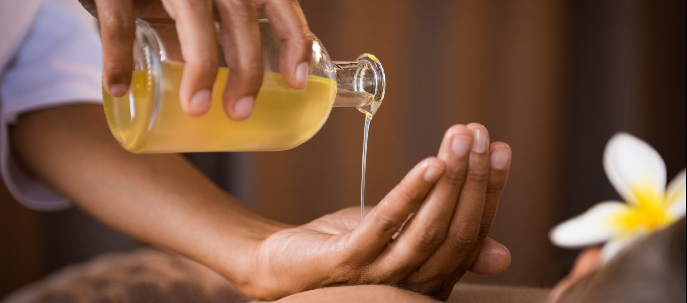
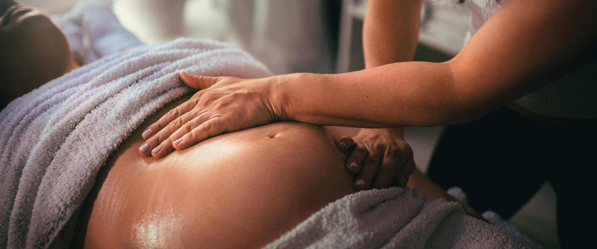

When working from a Holistic perspective, the body is viewed as a reflection of the whole person and all of
their
lived experiences. The body is the "home" of the emotions, belief systems and the expressions of the spirit,
and as such
we must respect it. Every time we experience something stressful, mentally demanding or emotionally exhausting
situation, our body remembers it and stores it. For this reason, after a certain amount of time, we begin to
feel
tensions and discomfort. That is the body which sends us a message that we should change something in our
life. The Holistic
approach to the massage basically represents the understanding that a person is much more than a body and that
complexity and
the beauty of each of us consists of many factors. All these parts of us are in the direct connection with our
body and
the way we feel about it (do we feel fantastic, flexible and extremely mobile or something
hurts, we are stiff, we have a problem), and because of this, different techniques (traditional, therapeutic,
shiatsu, Lymphatic Drainage Massage, reflexology, work with subtle
energies...) are used when applying holistic treatment and massage
which achieves deep relaxation of the organism on a physical, emotional and mental level.
The Holistic massage quickly improves the quality of sleep and concentration, improves blood and lymph
circulation in the body and the elimination of toxins in the body, and ailments caused by stress and bad
lifestyle habits are alleviated. Holistic
massage can alleviate or completely restore the lost balance in the body.
Duration: 100-120 minutes
Price: 2500 RSD
Classic - Relax Massage
A pleasant manual massage that relaxes the muscles and the entire body. It has invigorating and
soothing effect. Regular application of the massage accelerates metabolic processes, stimulates
cell regeneration, strengthens the immune system and relaxes the nervous system. During the relaxation massage
the accent is not on
"breaking knots" and deep work with soft tissue, but its main purpose is to make the client relax and
recover from the demands of everyday life. Choose this massage if you want to calm down and spoil yourself for
a moment.
Duration: 60 minutes
Price: 1800 RSD

Anti-Stress Massage
Anti-Stress massage is a combination of several different massage techniques that help the client to relieve,
in the most effective way,
the tension that accumulates in the body due to life habits, the pace of life and the demands of everyday
life.
Anti-Stress massage is a combination of classic relax and therapeutic massage, where essential oils are used,
adequately combined according to the client's needs, which gives this massage the character of Aromatherapy
for which it is intended
proven to have a beneficial effect on the entire organism, especially on the central nervous system, which has
the strongest
effect on psycho-physical processes in the body. During the Anti-Stress massage, the main focus are the back,
the head, the neck and the feet massage
, because these are the three parts of the human body on which stress first manifests, and through which is,
with massage, most effectively released.
Duration: 75 minutes
Price: 2000 RSD
Hot Stone Massage
Volcanic stone massage is a type of relaxing thermotherapy in which the whole body is massaged in a special,
heated volcanic stones, and a technique that was created exclusively for this type of massage. For it's
thermal characteristics, massage with hot volcanic stones ensures deep muscle and tissue relaxation,
relieves accumulated stress, increases circulation and enables the rapid removal of toxins from the body.
Also,
this type of massage is extremely effective in alleviating the pain of chronic musculoskeletal problems. It
has been proven that this type of massage has a positive effect on the cardiovascular, lymphatic,
musculoskeletal, endocrine, nervous and digestive systems.
Hot stone massage is an extraordinary experience that soothes, relaxes and boosts vital energy.
Duration: 90 minutes
Price: 2200 RSD

Prenatal Massage
The special needs that pregnant women have, given that their body is going through enormous changes, require
special and dedicated therapeutic work. Massage during pregnancy is a nice and safe way to relax
the problems that occur in the body and thereby reduce the pressure and pain that is present, which makes the
pregnant woman
relieves mental and physical fatigue. Massage will reduce back pain, which is an indispensable companion of
every
pregnant women, leg swelling and cramps will be alleviated, circulation in the body will improve, the nervous
system will relax, which
is also of great importance for women suffering from insomnia.
Prenatal massage can be started from the second trimester, i.e. from 4 months, of course with a doctor's
consultation,
who will approve this type of treatment.
Duration: 60 minutes
Price: 1800 RSD
Parcijalne masaže
If the client does not have the time for a full body massage, there are many partial massages available
, of which we recommend:
Back massage
Legs massage (relieves the feeling of "swollen" and "heavy" legs, restores normal blood and lymph
circulation
which regulates the processes of digestion, removal of excess fluid and toxins from the body)
Head, neck and shoulder massage (the benefits of this massage are multiple, because this area of the body
has
the acupressure points that stimulate processes in the entire organism)
Abdominal massage (eliminates constipation problems, restores normal abdominal function...)
Any combination, according to the client's needs, for an adequate duration.
Duration: 30 minutes
Price: 1000 RSD
Therapeutic Massage
Throughout life, during a sudden movement, by carrying an excessive load or constantly repeating
the same movements in work or sports, a trace of injury remains on the muscles, which over time, if not
treated to heal,
prevents the normal functioning of a body parts that are in correspondence with it, and leads to
the appearance of pain, stiffness, a problem that, by then, had already become chronic and "accompanying".
For those who have been following a chronic problem for a long time (months, years), pain, stiffness in
muscles, joints
or any part of the body, a therapeutic massage is also offered, which is done with the adequate pain-relieving
and anti-inflammatory gels and the techniques aimed at freeing the body from chronic problems.
Duration: 45 minutes
Price: 1200 RSD
Lymphatic drainage
Lymphatic drainage is an irreplaceable therapeutic procedure for stimulating and establishing proper
circulation of
lymph, improvement of venous circulation and overall detoxification of the body. It is a form of gentle
massage
which stimulates the movement of lymph and reduces swelling and pain caused by an excessive amount of lymph in
the
body or parts of the body. It has a beneficial effect on the nervous, muscular and immune systems.
Lymphatic drainage also contributes to better cell nutrition and tissue regeneration, removing excess fluid.
It strengthens the immune system, reduces or completely removes the feeling of swollen and tired legs, speeds
up the processes of
decomposition of cellulite and enables normal and healthy functioning of the body.
The regenerating effects of lymphatic drainage are not limited only to the tissue we drain, but also to deep
tissues, e.g.
in osteoporosis and stiff joints.
Duration: 60 minutes
Price: 1800 RSD
Ampuku
A traditional Japanese abdominal massage technique in which diagnosis and treatment of the abdomen is
performed by palpation.
The word "Ampuku" means "Pulse Hare" or "Soothing the Abdomen". In the Japanese tradition, "Hara" represents
the center
life energy of every person. Through ampuku therapy, by palpating points on the abdomen, it is possible to
establish a normal flow of energy and remove blockages, which is a prerequisite for uninterrupted functioning
both internal organs and the whole being. In Japanese medicine, Hara is the center of health and it affects
every
aspect of life, which is why so much attention is paid to it, because the main blood vessels pass through it.
On an emotional level, Hara is where we feel emotions.
With the help of Ampuku massage, the abdomen is relieved of tension, the internal organs are relaxed, and the
stomach and intestines are harmonized.
Duration: 45 minutes
Price: 1400 RSD
Feet Reflexology
Feet reflexology is a technique in which, by applying appropriate movements and pressures on the specific
points and
areas on the feet, we can directly influence the internal organs and systems in the body and thus alleviate
them
or completely remove the pain, both in the legs and in the organs with which those points and zones
correspond.
Reflexology is a deeply relaxing treatment whose benefits can be felt throughout the entire body.
Duration: 45 minutes
Price: 1400 RSD
Rasayana Abhyanga (Masaža Podmlađivanja)
An ancient Ayurvedic technique of regenerative massage, intended to preserve and improve the metabolic period
in
the life of every person. The metabolic period is our most active period in life, the time when we are most
creative and
we have the most energy. That is, of course, the period between 20 and 60 years. By regular application of
Rasayana,
the revitalization of the entire organism is promoted, which prolongs the duration of "youth". This
regenerative
massage reduces stress and anxiety, helps eliminate toxins, balances and tones the body, soothes
mental processes, and nurtures the spirit of the individual. Rasayana establishes a good state in the body by
releasing the emotional
tension and physical discomfort and creates a foundation for well-being and stability in the client's
physiology.
Trajanje: 60 minutes
Price: 2200 RSD
Anticellulite Massage
Anti-cellulite massage is one of the most effective methods for removing cellulite from sensitive regions on
the body. Anti-cellulite massage significantly improves circulation in the treated parts of the body and thus
the body
releases toxins accumulated in fat cells, tightens and rejuvenates the skin, i.e. restores its tone and
elasticity.
This is a type of intensive massage in which a combination of special massage techniques of kneading,
draining,
tapping, twisting, visibly improves the condition and the appearance of body regions that requires it.
Anticellulite massage
especially helps those parts of the body that are hard to be affected by exercise, such as the inner side of
the knees or
the upper outer part of the thighs.
Anti-cellulite treatments are started immediately after the end of the monthly cycle, because then, in the
next 10 days,
the best effects can be achieved.